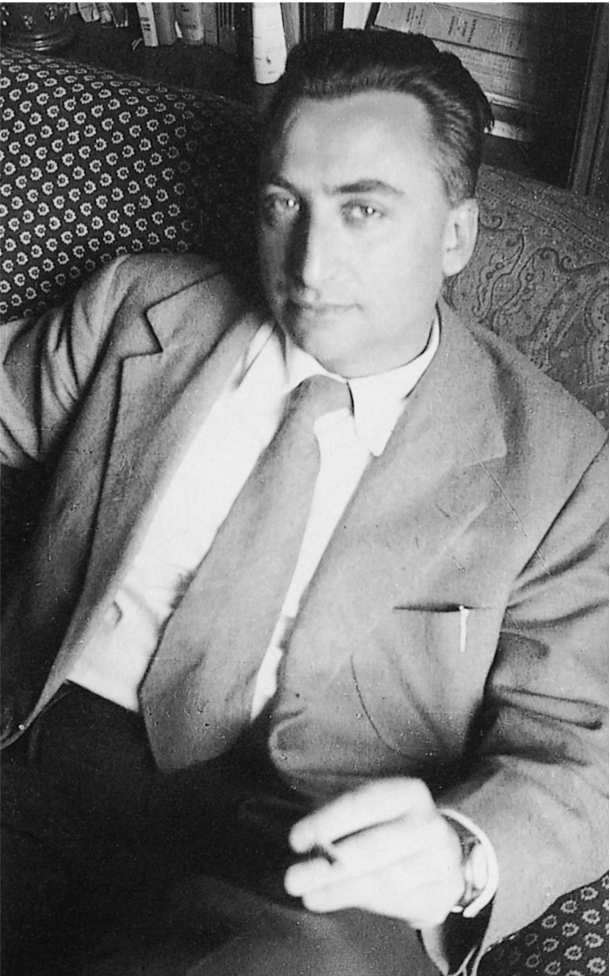

出于几点原因，巴特总是对历史颇感兴趣。首先，历史起到与自然相反的作用。文化竭力装作是人类状况和实践的自然特征，但实际上这些特征具有历史性，它们是历史力量和利益作用下的结果。巴特写道：“历史遭到否认的时刻，恰恰是它发挥作用的时候”（《写作的零度》，第9/2页）。历史研究能够说明各种文化实践形成的时间和方式，从而消除该文化意识形态的神秘性，并且揭露它作为意识形态的伪装。
其次，因为其他时代能够带给我们陌生感，并且帮助我们理解当前时代，所以巴特看重历史。在《文艺批评文集》中写到17世纪的伦理学家拉布吕耶尔时，巴特提出，我们应当“重点关注将他的世界和我们的世界分隔开来的距离，以及这种距离教给我们的东西；这就是我们在此想做的事：让我们一起来讨论拉布吕耶尔作品中与我们关系很少甚至无关的内容。或许只有这样我们才能抓住他的作品所具有的当代意义”（第223/223页）。我们觉得历史有趣、有价值，恰恰是因为历史不属于我们这个时代。
第三，历史有用，因为它能提供一个帮助我们理解当前时代的故事。这就是巴特在他最早的批评作品《写作的零度》中所寻求的目标。他勾勒出一段写作的历史（关于文学观念和秩序的历史），以帮助我们定位并且评价当代文学。当时最伟大的文学知识分子让——保罗·萨特在1948年出版了一本影响深远的小册子《何为文学？》，他用一段浓缩的历史回答了标题中提出的问题。他认为当代文学为了实现它的承诺，应当摆脱唯美主义和语言游戏，转向社会和政治问题。对此，巴特写了一段很有趣的回应（虽然他没有提及萨特的名字），他提供了另一个版本的故事，并以此对当代文学做出了不同评价。
在萨特鲜活、有力的描述中，18世纪晚期的法国作家最后才确立了自己恰当而实际的地位，因为他们在一群强大的听众面前说出了自己对于这个世界的进步看法，这一看法同时也是他们整个阶级的共同立场。但自1848年之后，随着资产阶级发展出一套意识形态来保护并支持他们新近获得的统治地位，作家们——简单地说——要么屈从资产阶级的意识形态，要么对此加以谴责，并且选择了在政治上无所作为的自我放逐。从此，政治上最“先进”的文学变成了一种没有合适听众的边缘化行为。福楼拜和马拉美选择了一种特殊的“无政治倾向”的文学，而20世纪的超现实主义者选择了一种在萨特看来是徒劳的和理论化的否定行为，回避了严肃的现实世界。
萨特认为，与他同时代的作家在第二次世界大战和抵抗运动期间感受到了强烈的“历史性”，因此他们明白政治倾向的重要性，并且让文学回归“它的本质，即一种选择立场的行为”。“作为作家，我们的任务是表征世界，并且为它作证。”在萨特看来，诗歌或许能玩弄语言游戏，或者进行语言实验，但散文才是在使用 语言：命名、描述、揭示。
作家应该使用一种有效、透明的语言，用事物在这种语言中的名字来称呼它们。
萨特区分了散文语言（不存在模糊意义的、透明的语言）和诗歌语言（意义模糊的、容易引发联想的语言），这意味着自福楼拜以来先锋派文学用来处理语言的全部手法都应该被归入诗歌领域，文学的故事（从福楼拜、马拉美到超现实主义及其他）是一段充满错误和衰落的故事。巴特赞同萨特的两点看法：文学与历史、社会之间具有重要联系，以及18世纪作家具有令人羡慕的处境（参见他论伏尔泰的文章《最后一个快乐的作家》，收录在《文艺批评文集》中）。他也同意萨特的说法（相比其他地区，这一看法在法国显得更为合理），认为1848年是历史的转折点（巴特认为，自福楼拜之后，文学就意味着对于语言的思考，以及和语言之间的冲突）。但巴特不同意萨特对语言和文学的另一些看法，他并不认为具有自我意识的现代主义文学如萨特所言是一种可悲的、缺乏道德意义的错乱，或者说，是“词语的一种癌症”。 [4]
因此，巴特从一开始就对萨特的说法（政治上有效的语言必然是直接的、透明的、按照字面意义来理解的语言）提出了大胆挑战。
《写作的零度》，第9/1页
所有的写作都包括符号，就像埃贝尔所用的低俗词语，这意味着一种社会模式，一种与社会的关系。仅仅通过页面上的位置安排，一首诗歌就可以产生意指效果，“我是诗歌，你不要按照阅读其他语言的方法来解读我。”文学具有不同的意指方式来告诉读者“我是文学”，而巴特的著作是关于这些“文学符号”的简明历史。没有哪种散文是萨特希望看到的透明的语言。即便是最简单的小说语言——比如海明威或加缪的作品——也以间接的方式意指一种与文学以及与世界的关系。一种去除修饰后的语言并不是自然或中性的语言，也不是透明的语言，而是刻意地被加入到文学机制当中；表面上，它拒绝了文学性，但实际上这变成了一种新的文学写作模式，用巴特的话来说就是，一种可辨识的书写 。作家的语言 是他从前人那里继承下来的用法，而他的风格 则是一种个性化的（或许也是潜意识的）用词习惯和偏好所形成的网络，但他的写作模式 或者说书写 则是他个人从所有的历史可能性中做出的选择。它是“一种想象文学的方式”，是“文学形式的一种社会性用法”。
巴特认为，从17世纪开始到19世纪中期，法国文学采取了一种单一的古典书写 模式，主要特点是相信语言的表征功能。当拉法耶特夫人写道，汤德伯爵在得知他的妻子怀上了另一个男人的孩子时，“想到了一切在这种情况下人们自然会想到的事”，她对写作功能的理解和近两个世纪后的巴尔扎克的理解完全一致。后者写道，欧也纳·德·拉斯蒂涅是“那些被不幸遭遇逼着努力的年轻人之一”，他还写道，于洛男爵是“那些一看到漂亮女人就两眼放光的男人之一”。这种古典书写 所依赖的前提是，存在一个熟悉的、秩序井然的、可以理解的世界，文学就指向了这样的世界。此处，写作具有政治效果，因为它以某种方式蕴含着普遍性和可理解性。
古典书写在思想和风格方面存在巨大差异。巴特认为，虽然巴尔扎克和福楼拜这两位几乎是同时代的作家在思想方面只存在次要差异，但他们的书写 有着明显不同。他认为，1848年后资产阶级意识形态的倾向性 开始显露出来。之前作家曾假定内容具有普遍性，而现在写作不得不对它自身（作为一种写作）进行反思。写作就是要自觉地与文学进行争辩。对此，巴特解释说：
《文艺批评文集》，第106——107/97——98页

图4 《写作的零度》（1953）出版时的巴特。
这是巴特在1959年所做的一番解释。但在1953年出版的《写作的零度》中，巴特用到的例子并不是阿兰·罗伯——格里耶，而是阿尔贝·加缪，后者尝试采用中性的、不带情感的方式来写作，巴特称之为“写作的零度”。萨特把加缪的空白书写 看作是拒绝表露政治倾向，但对于巴特来说，加缪的写作和从福楼拜开始的自觉性文学的其他例子一样，都在另一个层面具有历史性：它们对于“文学”的反抗以及它们对于意义和秩序的假定。严肃的文学必须质疑它自身以及文化借以规范世界的惯例，那里有它巨大的潜力。但“没有哪种写作能一直保持革命姿态”，因为违反语言和文学常规的做法最终将被复原为一种新的文学模式。
巴特的第一部著作《写作的零度》是一本怪异的批评论著。它很少提及文学作品，几乎没有任何相关的例子——唯一的引言来自共产主义知识分子罗杰·加洛蒂所写的一部小说（名字没有被提及）。后来，在收录于《论拉辛》里的一篇关于文学史的评论文章中，巴特批评文学史家，认为他们空有历史研究方法，却忽视了研究对象自身的历史本质。我们在这里看到了一个正好相反的问题：巴特强调了他的研究对象——写作，或者说，文学功能——的历史性，但他缺少一种历史方法。他没有具体解释古 典书写 这一说法，读者必须自己来寻找例子。巴特既不分析，也不展示。他甚至都没有答复 萨特（他没有提到萨特的书）。 [5] 他似乎是在实验萨特的文学故事：对其进行修改，从而产生一种新的思路，以便思考文学史并评价福楼拜之后的文学写作。
巴特在文学史领域的短暂涉足达到了三个目的。首先，他提出了“文学语言的政治和历史影响”。写作的政治重要性不仅在于政治内容或者作者明显的政治倾向，而且也体现在文化对于世界的文学性规范过程中该作品所起到的作用。不过，巴特并没有通过详尽的分析向我们展示，人们如何才能确定实验性写作潜在的政治效果，但他提出，文学对于语言的探索以及对于既定代码的批判释放出了一种宝贵的乌托邦式的质疑力量。他最令人信服的说法是，既然连政治手册也要通过间接的方式来产生作用，那么对写作的政治重要性进行评估就不会是件简单的事。
其次，《写作的零度》确立了一种总体性的历史叙事，为思考文学提供了便利。巴特提出，一种非自觉的、表征性的文学在1848年之后被一种自觉的、不易理解的实验性文学所取代；后来，他把自己所建立的叙事脉络变得更加复杂。在《S/Z》中，他区分了可读 与可写 ：可读文本是我们知道该如何进行阅读的文本，它具有一定的透明性；可写文本则体现出自觉意识，并且抗拒阅读。这种新的历史性区分与当代的阅读实践（而不是历史事件）的联系更加明显，但它的思想萌芽还是在古典书写 和现代书 写 的区分 中，巴特正是通过这一区分试图来理解当代的文学创作的。
最后，巴特关注的是文学的符号——写作如何暗指某种文学模式，这让我们（同时也让他自己）注意到意义弥散而强大的次级层面，之后他将继续对此进行研究，只不过变换使用多种不同的说法。他把这种次级的意指行为称为“神话”，而正是作为一名神话研究者，巴特开始在学界崭露头角。